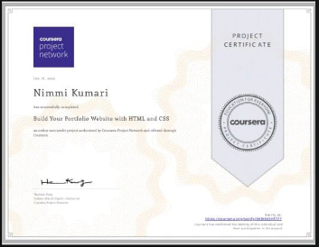

Hello! My name is Nimmi
and I am a passionate

Cerifications
HTML, CSS, and Javascript for Web Developers
I completed a course from Johns Hopkins University titled “HTML, CSS, and JavaScript for Web Developers (Semantic Web)”. Through this course, I strengthened my critical thinking skills and gained hands-on experience in computer programming and web development. I learned to build and style web pages using HTML and CSS, add interactivity with JavaScript, and understand both front-end and back-end web development concepts.
Programming in C
I completed a course from University of Michigan titled “Programming in C”, which helped me build a strong foundation in computer programming. Through this course, I learned core C concepts such as data types, variables, operators, control structures, functions, arrays, and pointers. It also strengthened my problem-solving and logical thinking skills, enabling me to write efficient, structured, and optimized programs while understanding how programs work at a low level.
Get Started with Sensitive Data Protection
I completed “Get Started with Sensitive Data Protection”, where I learned the basics of identifying, handling, and protecting sensitive information. This helped me understand data privacy principles, common security risks, and best practices for safeguarding personal and confidential data in digital systems, ensuring responsible and secure use of information.
Introduction to Large Language Models
I completed “Introduction to Large Language Models”, where I learned the fundamentals of how large language models work, their applications, and limitations. The course helped me understand concepts such as natural language processing, model training basics, ethical considerations, and the practical use of LLMs in real-world scenarios.
Introduction to Cybersecurity
I completed “Introduction to Cybersecurity” by Cisco Networking Academy, where I learned the fundamentals of cybersecurity, common cyber threats, types of attacks, and basic security practices. The course helped me understand the importance of protecting networks, systems, and data, along with awareness of cyber safety and ethical responsibility in the digital world.

Build Your Portfolio Website with HTML and CSS
I completed “Build Your Portfolio Website with HTML and CSS”, where I learned how to design and develop a personal portfolio website from scratch. This course strengthened my understanding of web development fundamentals, especially HTML and CSS, and helped me improve my web design skills. I learned to structure web pages properly, style them effectively, and create visually appealing, responsive layouts suitable for showcasing projects and skills professionally.